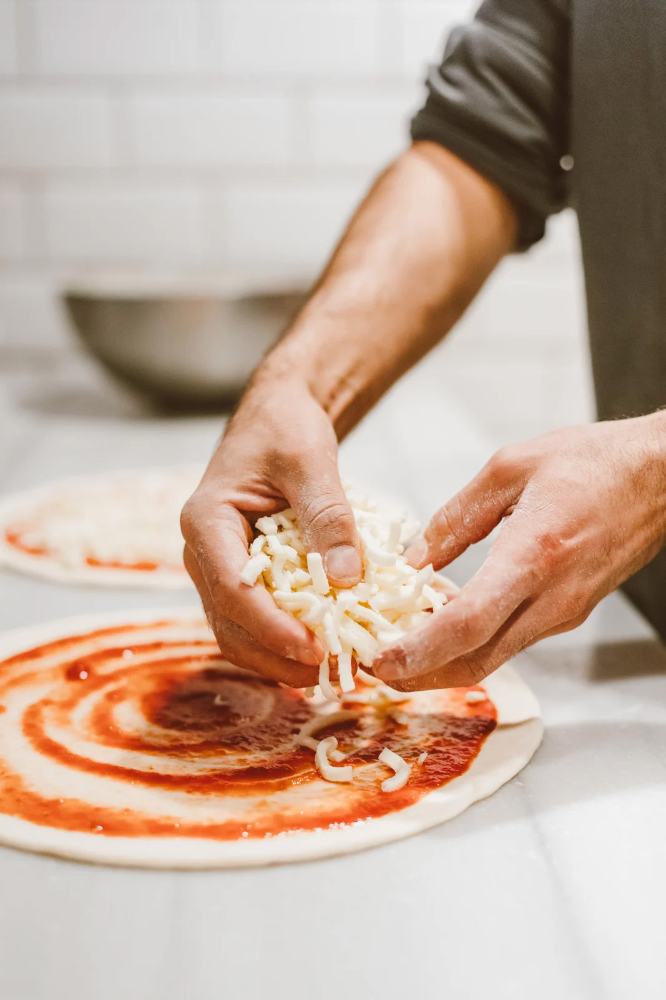

Why Choose Us?
Our pizza use the
traditional cold fermentation technology.
We use ice water and
flour, and the air-cooled refrigerator is used to store them at low temperature for at least 24 hours.
The dough are artificially stretched to retain the wheat flavor at the bottom of the cakes to the greatest extent.
In addition, the top cheese, salty meat, fresh vegetables and fruits come together.
Enrich Ingredients Provide Good Nutrition.